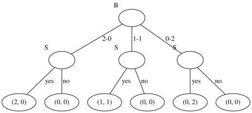
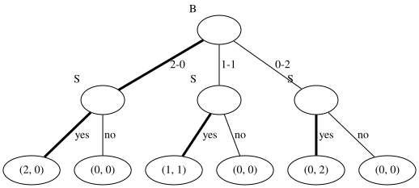

Extensive form games#
Learning outcomes
The learning outcomes of this chapter are:
Define ‘extensive form game’.
Identify situations in which extensive form games are a suitable model of a problem.
Define the types of strategy for an extensive form game.
Manually apply backward induction to small extensive form games.
Design and implement backward induction to solve medium-scale extensive form games automatically.
Overview#
In this section, we look at extensive form games. An extensive form game is a sequential game, which includes a set of players, rules around which players can move when, and what they observe and the rewards they receive when they move. In an extensive form game, there are multiple players who can take moves in the game, but not simultaneously. At the end of the game, each player receives a reward, known as a payoff, which can be positive or negative.
We look at three main ways to solve extensive form games:
In a model-based game, we can use backward induction, which is where we calculate an equilibrium for every subgame of the game, and these to decide our moves.
In a model-free game, we can use model-free reinforcement learning. These are very similar to techniques such as Q-learning or policy gradient methods, except that there are other players that can effect our rewards, rather than just ourselves and the environment.
If we have a simulation, we can use model-free techniques or multi-agent Monte-Carlo tree search (MCTS), which is similar to single-agent MCTS, except again there are other players that can effect our rewards, rather than just ourselves and the environment.
In these notes, we will look only at perfect information extensive form games, which means that the game state is fully observable to all players.
Perfect information extensive form games#
Definition – Perfect information extensive form game
A perfect information extensive form game is a tuple \(G = (N, S, s_0, A, P, T, r)\)
\(N\) is a set of \(n\) number of players
\(S\) is a set of states (or node)
\(s_0\) is the initial state
\(A: S \rightarrow 2^A\) is a function that specifies the allowed actions from each state \(s \in S\)
\(P: S \rightarrow N\) is a function that specifies which player chooses the action at a node (whose turn it is)
\(T : S \times A \rightarrow S\) is a transition function that specifies the successor state for choosing an action in a state
\(r : S \rightarrow \mathbb{R}^N\) is a reward function that returns an \(N\)-tuple specifying the payoff each player receives in state \(S\). In some texts, this may be called \(u\) instead of \(r\), to represent utility, but we will use \(r\) in these notes.
An extensive form game forms a tree, due to its sequential nature.
Example – The sharing game
Consider the following simple game called the Sharing Game, from Essentials in Game Theory by Leyton-Brown and Shoham:
“Imagine a brother and sister following the following protocol for sharing two indivisible and identical presents from their parents. First the brother suggests a split, which can be one of three—he keeps both, she keeps both, or they each keep one. Then the sister chooses whether to accept or reject the split. If she accepts they each get their allocated present(s), and otherwise neither gets any gift.”
We assume that the brother and sister both value the presents equally, we can represent this as a tree, so the rewards vectors are (2,0), (1,1), and (0,2) where the first element is the brother’s reward and the second element is the sisters reward.
We can implement such a game in Python. First, we have an interface that defined what an extensive form game is:
class ExtensiveFormGame:
"""Get the list of players for this game as a list [1, ..., N]"""
def get_players(self):
abstract
""" Get the valid actions at a state """
def get_actions(self, state):
abstract
""" Return the state resulting from playing an action in a state """
def get_transition(self, state, action):
abstract
""" Return the reward for a state, return as a dictionary mapping players to rewards """
def get_reward(self, state, action, next_state):
abstract
""" Return true if and only if state is a terminal state of this game """
def is_terminal(self, state):
abstract
""" Return the player who selects the action at this state (whose turn it is) """
def get_player_turn(self, state):
abstract
""" Return the initial state of this game """
def get_initial_state(self):
abstract
""" Return a game tree for this game """
def game_tree(self):
return self.state_to_node(self.get_initial_state())
def state_to_node(self, state):
if self.is_terminal(state):
node = GameNode(state, None, self.get_reward(state))
return node
player = self.get_player_turn(state)
children = dict()
for action in self.get_actions(state):
next_state = self.get_transition(state, action)
child = self.state_to_node(next_state)
children[action] = child
node = GameNode(state, player, None, children=children)
return node
class GameNode:
# record a unique node id to distinguish duplicated states
next_node_id = 0
def __init__(
self, state, player_turn, value, is_best_action=False, children=dict()
):
self.state = state
self.player_turn = player_turn
self.value = value
self.is_best_action = is_best_action
self.children = children
self.id = GameNode.next_node_id
GameNode.next_node_id += 1
Then, we need to implement this interface to create an extensive form game:
from mastering_rl.extensive_form_games.extensive_form_game import ExtensiveFormGame
BROTHER = "B"
SISTER = "S"
class SharingGame(ExtensiveFormGame):
"""Get the list of players for this game as a list [1, ..., N]"""
def get_players(self):
return [BROTHER, SISTER]
""" Get the valid actions at a state """
def get_actions(self, state):
actions = dict()
actions[1] = ["2-0", "1-1", "0-2"]
actions[2] = ["yes", "no"]
actions[3] = ["yes", "no"]
actions[4] = ["yes", "no"]
if state in actions.keys():
return actions[state]
else:
return []
""" Return the state resulting from playing an action in a state """
def get_transition(self, state, action):
transitions = dict()
if state == 1:
transitions["2-0"] = 2
transitions["1-1"] = 3
transitions["0-2"] = 4
return transitions[action]
elif state > 1 and state <= 4:
transitions["no"] = state * 2 + 1
transitions["yes"] = state * 2 + 2
return transitions[action]
else:
transitions[action] = []
return transitions[action]
""" Return the reward for a state, return as a dictionary mapping players to rewards """
def get_reward(self, state):
rewards = dict()
if state > 4:
rewards[5] = {BROTHER: 0, SISTER: 0}
rewards[6] = {BROTHER: 2, SISTER: 0}
rewards[7] = {BROTHER: 0, SISTER: 0}
rewards[8] = {BROTHER: 1, SISTER: 1}
rewards[9] = {BROTHER: 0, SISTER: 0}
rewards[10] = {BROTHER: 0, SISTER: 2}
return rewards[state]
else:
return {BROTHER: 0, SISTER: 0}
""" Return true if and only if state is a terminal state of this game """
def is_terminal(self, state):
return state > 4
""" Return the player who selects the action at this state (whose turn it is) """
def get_player_turn(self, state):
if state == 1:
return BROTHER
else:
return SISTER
""" Return the initial state of this game """
def get_initial_state(self):
return 1
def to_string(self, state):
return str(state)
We can visualise extensive form games as game trees, where the edges are actions, and the nodes are states. The root node is the initial state. Consider the following extensive form game tree for the sharing game. The labels next to nodes indicate whose turn it is (“B” for brother and “S” for sister), and the tuples in nodes are the payoffs at that node (blank if there are no payoffs):
from mastering_rl.extensive_form_games.sharing_game import SharingGame
sharing = SharingGame()
from mastering_rl.utils.graph_visualisation import GraphVisualisation
gv = GraphVisualisation(max_level = 5)
graph = gv.node_to_graph(sharing, sharing.game_tree())
graph

Solutions for extensive form games#
Like normal form games, extensive form games have strategies, however, the strategies must tell each agent what to do every time it is their turn to choose the action.
Definition – Pure strategy
For an extensive form game \(G\), the set of pure strategies for a player \(i\) is the Cartesian product \(\Pi_{s\in S,P(s)=i}A(s)\).
Therefore, a pure strategy for player \(i\) tells them what move to take in each state where it is their turn.
An optimal solution for an extensive form game is called the subgame-perfect equilibrium for that game. Before we define what subgame-perfect equilibria are, we first need to define what sub-games are..
Definition – Sub-game
Given an extensive form game \(G\), the sub-game of \(G\) rooted at the node \(s_g \in S\) is the game \(G_{s_g}= (N, S, s_{g}, A, T, r)\); that is, the part of the game tree in which \(s_g\) is the root node and its descendants are the same as its descendants in \(G\).
For any state \(s_g \in S\) that occurs in the game tree, we can define a sub-game by taking the descendants of that tree. Therefore, we can define a game as simply the root node \(s_0\), with the actions in \(A(s_0)\) lead to nodes that are the root nodes of its sub-game.
Definition – Subgame-perfect equilibria
The subgame-perfect equilibria (SPE) of a game \(G\) consists of all strategy profiles for the N agents such that for any subgame \(G_{s_g}\) of \(G\), the strategy for player \(P(s_g)\) is the best response for that player at \(s_g\).
Therefore, a sub-game perfect equilibria is the best response for every agent in the game when it is their turn.
As an example, consider the sharing game. In this case, the same game on the left and middle have two equilibria because the payoffs for each of the moves are zero for the sister. In such a case, ties can be broken randomly or we can take all best responses. We can represent the subgame-perfect equilibria for the sharing game as follows, where the thicker arcs specify the move that the player should make (where the ties are broken randomly):
from mastering_rl.extensive_form_games.sharing_game import SharingGame
from mastering_rl.extensive_form_games.backward_induction import BackwardInduction
sharing = SharingGame()
backward_induction = BackwardInduction(sharing)
solution = backward_induction.backward_induction(sharing.get_initial_state())
from mastering_rl.utils.graph_visualisation import GraphVisualisation
gv = GraphVisualisation()
graph = gv.node_to_graph(sharing, solution)
graph

Note then that breaking ties randomly leads to a strange outcome where the brother plays \(2-0\) (gives nothing to his sister), where he could possibly receive a payoff of 0 if his sister actually chooses \(no\). This is the disadvantage of breaking ties randomly.